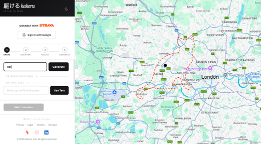

Sketch a shape, type your name, or pick a preset — kakeru snaps it to real roads and sends it straight to Strava.

How it works
From a doodle in your head to a GPS artwork on your wrist.
Step 01
Choose a preset like heart or star, type any word, or describe anything — AI generates the outline.
Step 02
Drop a pin anywhere on earth, search an address, or use your current location to anchor the route.
Step 03
Resize, rotate and reposition the shape on the map. Preview snapped roads before committing.
Step 04
Push directly to Strava or download as GPX. Lace up, step out, and run your art.
Why kakeru
Freehand draw, type text as words to run, or describe a shape and let AI generate it for you.
Smart algorithm finds the closest real roads to match your design. Your GPS art actually looks right.
Create routes on Strava with one click. No file downloads, no manual imports.
Running, cycling, hiking, or off-road — routes optimized for each activity.
Start creating immediately. Only sign in when you want to push a route to Strava.
Fully responsive — design routes on your phone, tablet, or desktop wherever you are.
Creative input
Whether you have a clear vision or just want to explore, kakeru gives you the right tool for every level of creativity.
Tap a shape — heart, star, cat, tree — and your route is ready in seconds. Zero creative friction.
Sketch anything directly on the canvas. Your hand-drawn shape becomes a real, runnable route.
Type your name, a message, or any word. Kakeru converts letterforms into GPS-accurate paths you can actually run.
Road snapping
Your drawing is just the starting point. Kakeru's snapping engine maps every curve onto actual roads you can run, ride, or hike on.
Routes follow the real road network — your GPS art actually looks like your drawing when you run it.
Running, cycling, hiking, off-road — each mode optimizes for the right surfaces, paths, and trail types.
Adjust route size, rotation, and distance before generating. Preview how it looks on real roads in real time.
Export & run
The fastest path from idea to action. Push your route directly to Strava — or download the GPX for any device. No friction, no file juggling.
One click creates the route on your Strava account. Open Strava and it's already there, ready to follow.
Prefer Garmin, Coros, or another device? Download the GPX file and import it anywhere.
Design and preview everything without an account. Only connect Strava at the very last step if you choose to.
FAQ
Pricing
Starter
$5/mo
Billed monthly · cancel anytime
Pro
$12/mo
Billed monthly · cancel anytime
Elite
$24/mo
Billed monthly · cancel anytime
Hearts, stars, your name — the streets are your canvas.
Start Creating